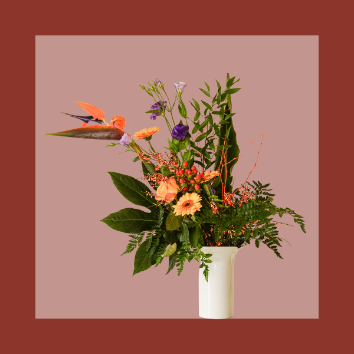
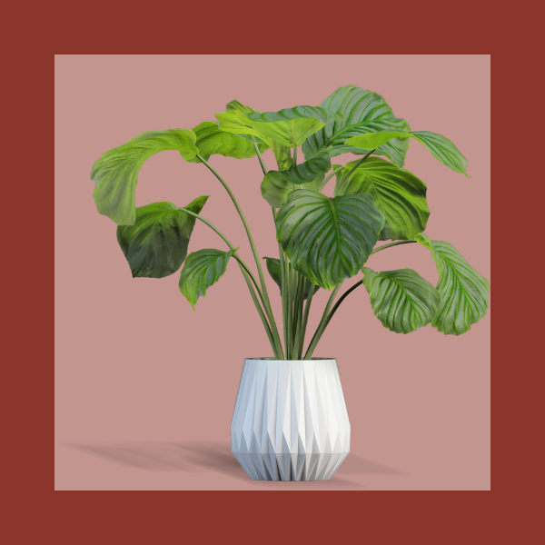

-
Buquês
-

Arranjos
-

Plantas
Na Ana Flor, cada flor tem uma história. Trabalhamos com cultivo próprio e também com fornecedores parceiros selecionados que prezam pelo cuidado com a natureza. Muitas das flores que você encontra aqui são plantadas em nosso jardim, com todo carinho e atenção. Da colheita ao arranjo final, todo o processo é feito à mão, com amor. Nossa missão é levar beleza, afeto e um pedacinho da natureza até você, seja por meio de um buquê delicado, uma decoração especial ou um simples gesto florido. Mais do que vender flores, queremos florescer emoções.